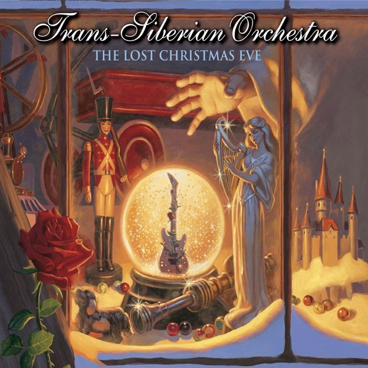

The Lost Christmas Eve
Trans-Siberian Orchestra
Upgrade idea: This 2024 20th Anniversary pressing is the first and only vinyl edition — there is no earlier pressing to upgrade from and no audiophile alternative. This is the definitive physical version.
- Original release
- 2004
- Pressing year
- 2024
- Country
- US
- Format
- 2× Vinyl LP, Stereo
- Label / Cat#
- Atlantic – R1 93416
- Genres
- Rock, Pop
- Styles
- Holiday
- Discogs release
- 31728956
- Discogs master
- 373180
- Apple Music
- The Lost Christmas Eve
- Wikipedia
- The Lost Christmas Eve
Production notes
Tracklist (Discogs)
| A1 | Faith Noel | |
| A2 | The Lost Christmas Eve | |
| A3 | Christmas Dreams | |
| A4 | Wizards In Winter | |
| B1 | Remember | |
| B2 | Anno Domine | |
| B3 | Christmas Concerto | |
| B4 | Queen Of The Winter Night | |
| B5 | Christmas Nights In Blue | |
| B6 | Christmas Jazz | |
| B7 | Christmas Jam | |
| C1 | Siberian Sleigh Ride | |
| C2 | What Is Christmas? | |
| C3 | For The Sake Of Our Brother | |
| C4 | The Wisdom Of Snow | |
| C5 | Wish Liszt (Toy Shop Madness) | |
| C6 | Back To A Reason (Part II) | |
| D1 | Christmas Bells, Carousels & Time | |
| D2 | What Child Is This? | |
| D3 | O Come All Ye Faithful | |
| D4 | Christmas Canon Rock | |
| D5 | Different Wings | |
| D6 | Midnight Clear |
Tracklist (Apple Music)
| 1 | Faith Noel | 4:32 |
| 2 | The Lost Christmas Eve | 5:33 |
| 3 | Christmas Dreams | 3:54 |
| 4 | Wizards in Winter (Instrumental) | 3:05 |
| 5 | Remember | 3:25 |
| 6 | Anno Domine | 2:13 |
| 7 | Christmas Concerto (Instrumental) | 0:42 |
| 8 | Queen of the Winter Night | 3:11 |
| 9 | Christmas Nights in Blue | 4:18 |
| 10 | Christmas Jazz (Instrumental) | 2:16 |
| 11 | Christmas Jam | 3:47 |
| 12 | Siberian Sleigh Ride (Instrumental) | 3:08 |
| 13 | What Is Christmas? | 2:51 |
| 14 | For the Sake of Our Brother | 3:09 |
| 15 | The Wisdom of Snow (Instrumental) | 2:01 |
| 16 | Wish Liszt (Toy Shop Madness) (Instrumental) | 3:42 |
| 17 | Back to a Reason (Part II) | 4:52 |
| 18 | Christmas Bells, Carousels & Time (Instrumental) | 1:04 |
| 19 | What Child Is This? | 5:57 |
| 20 | O' Come All Ye Faithful (Instrumental) | 1:26 |
| 21 | Christmas Canon Rock | 5:02 |
| 22 | Different Wings | 2:44 |
| 23 | Midnight Clear | 1:38 |
Identifiers
- Barcode: 603497823901
Notes
20th Anniversary 2-LP Edition
TSO's final installment of their famed Christmas Trilogy, available for the first time on vinyl
Notes & discrepancies
- Release year differs: your pressing=2024, Apple Music edition=2004. Apple Music typically streams the most recent remaster.
The Lost Christmas Eve is the third and final installment of Trans-Siberian Orchestra’s Christmas Trilogy, originally released in October 2004 on Atlantic Records. Written and produced by TSO founder and mastermind Paul O’Neill, the album completes the narrative arc begun with Christmas Eve and Other Stories (1996) and The Christmas Attic (1998). Like its predecessors, it blends hard rock, orchestral bombast, and progressive rock arrangements into an elaborate Christmas-themed song cycle — TSO’s signature formula of arena rock drama wrapped in holiday storytelling, featuring their characteristic layered guitar work, operatic vocals, and sweeping orchestration.
The album was originally released only on CD and never pressed to vinyl during its initial run. This 2024 20th Anniversary edition marks its first-ever vinyl release, issued by Atlantic Records (catalog R1 93416) as a 2LP stereo set. Pressed at Memphis Record Pressing — confirmed by
MRPin the deadwax alongside the lacquer codes282083E2(Side 2) and1911015. Memphis Record Pressing is one of the premier US pressing plants, used for many high-profile modern reissues.About this 2024 US pressing (2× Vinyl, LP, 20th Anniversary Edition): Atlantic catalog R1 93416, 2024 first vinyl pressing. 20th Anniversary edition. Pressed by Memphis Record Pressing. Barcode 603497823901. Matrix 282083E2 / MRP58427 (Side 2 confirmed from deadwax).